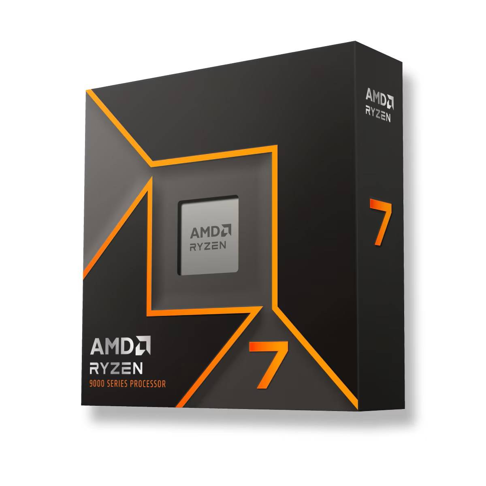
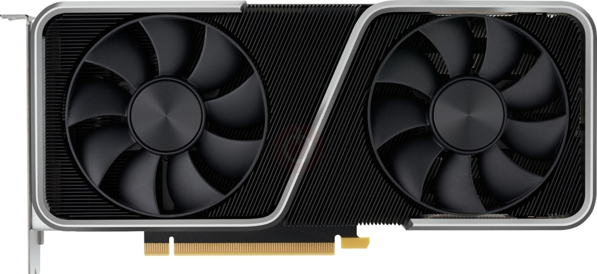

Ryzen 7 9700X, RTX 3060Ti 16GB, 4TB SSD, 16GB RAM
Procesor - Ryzen 7 9700X
Frekvence: 3.8 GHz
Max Frekvence: 5.5 GHz
Počet Jader: 8
Počet Vláken: 16
L1 Casche: 80 KB (1 jádro)
L2 Casche: 1 MB (1 jádro)
L3 Casche: 32 MB
TDP: 65 W
Max TDP: 105 W
Socket: AM5
Výrobní Technologie: 4 nm
Grafická Karta - RTX 3060Ti
Počet Stream Procesorů: 4864x
Výrobní Technologie: 8nm
Architektura Čipu: Ampere
Grafický Procesor: GA104-200-A1
Velikost VRAM: 8GB
Typ Paměti: GDDR6
Šířka Sběrnice: 256-Bit
Frekvence Jádra: 1410 MHz
Frekvence Paměti: 1750 MHz (14Gbps)
TDP: 200 W

